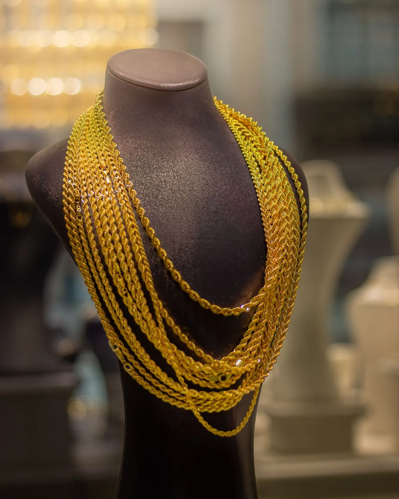

Pièce 01 / 04
Trésor de Seine
Un fleuve d’or tissé fil à fil, sertis navette et saphirs jaunes.
Mille deux cent quarante heures : c’est le temps qu’a demandé ce collier, tissé maillon après maillon comme un pont suspendu. Trois cent quatre-vingts grammes d’or jaune recyclé, trois cent douze diamants taille navette, onze saphirs jaunes choisis pour leur chaud crépuscule. Il descend sur le buste comme l’eau suit son lit.
- MatièreOr jaune 18 ct tissé main
- Pierres312 diamants, 11 saphirs jaunes
- Poids18,40 ct — 380 g
- Atelier1 240 heures
285 000 € Pièce unique — certificat LFG inclus